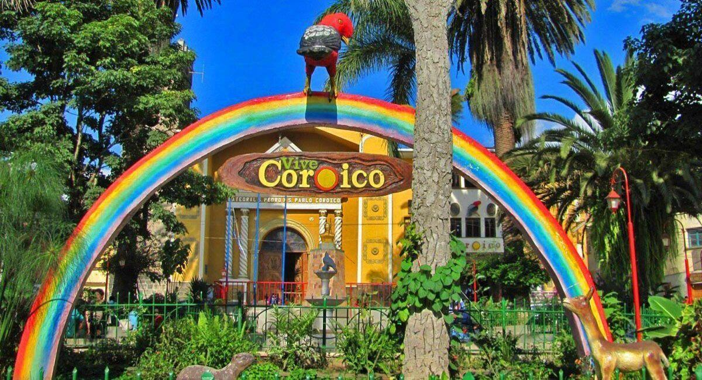

El Illimani es una montaña nevada de los Andes de Bolivia, ubicada cerca de la ciudad de La Paz. Con 6.460 metros sobre el nivel del mar, es la de mayor altura de la Cordillera Real y la segunda de Bolivia (detrás del nevado Sajama, que pertenece a la Cordillera Occidental). Administrativemente se encuentra ubicada entre los municipios de Palca e Irupana, en las provincias de Murillo y Sud Yungas respectivamente, dentro del departamento de La Paz.
Coroico es una pequeña ciudad y municipio boliviano, capital de la provincia de Nor Yungas del departamento de La Paz. Se encuentra ubicada al noreste del departamento de La Paz, y al este de la cordillera Oriental de los Andes, en la región de los Yungas. Tiene una extensión de 1.088 km² y la localidad capital se encuentra a 97 km de la ciudad de La Paz, ingresando por la carretera troncal bioceánica que comunica al sector de los Yungas y al norte del país. Por sus suaves temperaturas es considerada una de las ciudades de eterna primavera.